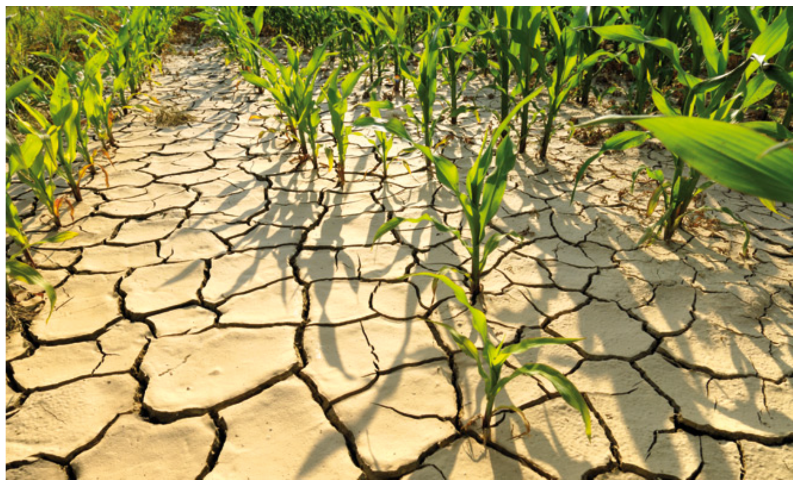

pacman::p_load(tidyverse,plotly,ggiraph,ggdist,ggthemes,ggridges)Take-home Exercise 3 ：Be Weatherwise or Otherwise
1 Overview
According to an office report as shown in the infographic below,
Daily mean temperature are projected to increase by 1.4 to 4.6, and
The contrast between the wet months (November to January) and dry month (February and June to September) is likely to be more pronounced.
An increase in the intensity of weather variability could present significant challenges to the management of our water resources. Periods of drought can affect the reliability of Singapore’s water supply, while sudden episodes of intense rainfall could overwhelm our drainage system and lead to flash floods.

Source: Ministry of Sustainability and the Environment
2 Data Collection
I will choose rainfall records of a month of the year 1983, 1993, 2003, 2013 and 2023 in Sentosa Island and create an analytics-driven data visualisation.
Because I want to verify that The contrast between the wet months (November to January) and dry month (February and June to September) is likely to be more pronounced. So I will download precipitation data for December (wet month) and August (dry month) for different years.
Download the data from http://www.weather.gov.sg/climate-historical-daily/
Now I’ve downloaded all the data I need.
Such as the following file, which contains data for December and August in 1983, 1993, 2003, 2013 and 2023 in Sentosa Island
3 Installing and Launching R Packages
tidyverse, a family of modern R packages specially designed to support data science, analysis and communication task including creating static statistical graphs.
ggiraph for making ‘ggplot’ graphics interactive.
plotly, R library for plotting interactive statistical graphs.
ggdist, for visualising distribution and uncertainty.
ggthemes, an R package provides some extra themes, geoms, and scales for ‘ggplot2’.
ggridges, a ggplot2 extension specially designed for plotting ridgeline plots
4 Data Preparation
4.1 Data Extraction
I will first extract the valuable variables. I have selected ‘Year’, ‘Month’, ‘Day’, ‘Daily Rainfall Total (mm)’ as the variables for subsequent analysis. Below are two methods for organizing the data. The second method utilizes the lapply function, which makes data integration more convenient when iterating over multiple files.
data1 <- read_csv("data/DAILYDATA_S60_198308.csv",locale=locale(encoding="latin1"))
data1 <- data1 %>% select(Year, Month, Day, `Daily Rainfall Total (mm)`)
data2 <- read_csv("data/DAILYDATA_S60_199308.csv",locale=locale(encoding="latin1"))
data2 <- data2 %>% select(Year, Month, Day, `Daily Rainfall Total (mm)`)
data3 <- read_csv("data/DAILYDATA_S60_200308.csv",locale=locale(encoding="latin1"))
data3 <- data3 %>% select(Year, Month, Day, `Daily Rainfall Total (mm)`)
data4 <- read_csv("data/DAILYDATA_S60_201308.csv",locale=locale(encoding="latin1"))
data4 <- data4 %>% select(Year, Month, Day, `Daily Rainfall Total (mm)`)
data5 <- read_csv("data/DAILYDATA_S60_202308.csv",locale=locale(encoding="latin1"))
data5 <- data5 %>% select(Year, Month, Day, `Daily Rainfall Total (mm)`)
data6 <- read_csv("data/DAILYDATA_S60_198312.csv",locale=locale(encoding="latin1"))
data6 <- data6 %>% select(Year, Month, Day, `Daily Rainfall Total (mm)`)
data7 <- read_csv("data/DAILYDATA_S60_199312.csv",locale=locale(encoding="latin1"))
data7 <- data7 %>% select(Year, Month, Day, `Daily Rainfall Total (mm)`)
data8 <- read_csv("data/DAILYDATA_S60_200312.csv",locale=locale(encoding="latin1"))
data8 <- data8 %>% select(Year, Month, Day, `Daily Rainfall Total (mm)`)
data9 <- read_csv("data/DAILYDATA_S60_201312.csv",locale=locale(encoding="latin1"))
data9 <- data9 %>% select(Year, Month, Day, `Daily Rainfall Total (mm)`)
data10 <- read_csv("data/DAILYDATA_S60_202312.csv",locale=locale(encoding="latin1"))
data10 <- data10 %>% select(Year, Month, Day, `Daily Rainfall Total (mm)`)file_names <- c("DAILYDATA_S60_198308.csv", "DAILYDATA_S60_199308.csv", "DAILYDATA_S60_200308.csv","DAILYDATA_S60_201308.csv", "DAILYDATA_S60_202308.csv", "DAILYDATA_S60_198312.csv","DAILYDATA_S60_199312.csv", "DAILYDATA_S60_200312.csv", "DAILYDATA_S60_201312.csv","DAILYDATA_S60_202312.csv")
file_path_prefix <- "data/"
data_list <- lapply(file_names, function(file_name) {
file_path <- paste0(file_path_prefix, file_name)
read_csv(file_path, locale = locale(encoding = "latin1")) %>%
select(Year, Month, Day, `Daily Rainfall Total (mm)`)
})4.2 Check Data Type
To ensure that the tables can be merged, we need to make sure that the data type of the ‘Daily Rainfall Total (mm)’ column is the same, specifically numeric type, so we took actions to unify the data type.
data_frames <- list(data1, data2, data3, data4, data5, data6, data7, data8, data9, data10)
data_frames <- lapply(data_frames, function(df) {
df$`Daily Rainfall Total (mm)` <- as.numeric(as.character(df$`Daily Rainfall Total (mm)`))
return(df)
})
combined_data <- bind_rows(data_frames)
write_rds(combined_data, "data/combined_data.rds")
combined_data <- read_rds("data/combined_data.rds")4.3 New column
To make the rainfall amount and its corresponding time more clear in the table for visualization purposes, I will add a ‘Date’ column, facilitating further visual analysis later on.
combined_data$Date <- as.Date(paste(combined_data$Year, combined_data$Month, combined_data$Day, sep = "-"))
final_data <- combined_data[, c('Year','Month','Day','Date','Daily Rainfall Total (mm)' )]4.4 Final Dataset
The final data presented has 5 variables, 5 columns, and 310 rows. Additionally, it confirms that the years and months are those that I intend to study.
final_data# A tibble: 310 × 5
Year Month Day Date `Daily Rainfall Total (mm)`
<dbl> <dbl> <dbl> <date> <dbl>
1 1983 8 1 1983-08-01 0
2 1983 8 2 1983-08-02 3.7
3 1983 8 3 1983-08-03 60.6
4 1983 8 4 1983-08-04 11.5
5 1983 8 5 1983-08-05 5.8
6 1983 8 6 1983-08-06 0
7 1983 8 7 1983-08-07 0.9
8 1983 8 8 1983-08-08 0
9 1983 8 9 1983-08-09 0
10 1983 8 10 1983-08-10 0
# ℹ 300 more rowsunique_years <- unique(final_data$Year)
unique_years[1] 1983 1993 2003 2013 2023unique_months <- unique(final_data$Month)
unique_months[1] 8 125 Analytical thinking
If I want to explore the rainfall data for the years 1983, 1993, 2003, 2013, and 2023, I am considering investigating from the following three aspects:
Whether the rainfall amount in the dry month of August decreases over the years, and what the trend looks like?
Whether the rainfall amount in the wet month of December increases over the years, and what the trend looks like?
Whether the gap between the dry month and wet month widens as the years change?
These three hypotheses are used to validate the statement from NCCS: “The contrast between the wet months (November to January) and the dry month (February and June to September) is likely to be more pronounced.”
6 Data Visualization
6.1 Dry month
To start with, I will filter the data for August from the final_data and calculate the average rainfall for the month of August each year.
august_data <- filter(final_data, Month == 8)
average_rainfall_by_year_august <- august_data %>%
group_by(Year) %>%
summarise(Average_Rainfall = mean(`Daily Rainfall Total (mm)`, na.rm = TRUE))For this visualization, when you hover the mouse over a specific data point, a tooltip will appear displaying the date and the corresponding rainfall for that day. A lightblue line connecting these points represents the average rainfall for August of each year, allowing us to observe whether there is a significant increase in rainfall as the years progress.
Code
p <- plot_ly() %>%
add_trace(
data = august_data,
x = ~Year, y = ~`Daily Rainfall Total (mm)`,
type = 'box',
marker = list(color = '#E2A79A'),
boxpoints = 'all',
jitter = 0.3,
pointpos = -1.8 ,
text = ~paste('Date:', Date, '<br>Rainfall (mm):', `Daily Rainfall Total (mm)`),
hoverinfo = 'text'
) %>%
add_trace(
data = average_rainfall_by_year_august,
x = ~Year, y = ~Average_Rainfall,
type = 'scatter',
mode = 'markers+lines',
marker = list(color = 'lightblue', size = 10),
line = list(color = 'lightblue', width = 2)
) %>%
layout(
title = "August Rainfall Distribution by Year",
yaxis = list(title = "Daily Rainfall Total (mm)", range = c(0, 40)),
xaxis = list(title = "Year", tickvals = c(1983, 1993, 2003, 2013, 2023)),
hovermode = 'closest'
)
p <- p %>%
add_trace(
data = august_data,
x = ~Year, y = ~`Daily Rainfall Total (mm)`,
text = ~paste('Date:', Date, '<br>Rainfall (mm):', `Daily Rainfall Total (mm)`),
hoverinfo = 'text',
type = 'scatter',
mode = 'markers',
marker = list(color = 'transparent')
)
p <- p %>% layout(showlegend = FALSE)
p <- p %>% layout(hoverlabel = list(namelength = 0))
püîçInsights
By connecting the median rainfall of each year with a line (which is lightblue), we can observe a fluctuating trend. In certain years, like 1993 and 2013, the median rainfall seems to have increased, while in other years, such as 1983 and 2023, it appears to have decreased. Overall, there is a slight downward trend, but it’s not particularly pronounced. However, from the boxplot, it can be seen that there are more days without rain.
6.2 Wet month
For December, the operation would be the same. I will filter the data for December from the final_data and calculate the average rainfall for the month of December each year.
december_data <- filter(final_data, Month == 12)
average_rainfall_by_year_december <- december_data %>%
group_by(Year) %>%
summarise(Average_Rainfall = mean(`Daily Rainfall Total (mm)`, na.rm = TRUE))Also in this visualization, when you hover the mouse over a specific data point, a tooltip will appear displaying the date and the corresponding rainfall for that day.
Code
p <- plot_ly() %>%
add_trace(
data = december_data,
x = ~Year, y = ~`Daily Rainfall Total (mm)`,
type = 'box',
marker = list(color = '#A79AE2'),
line = list(color = 'orange'),
fillcolor = list(color = 'orange',alpha=0.5),
boxpoints = 'all',
jitter = 0.3,
pointpos = -1.8 ,
text = ~paste('Date:', Date, '<br>Rainfall (mm):', `Daily Rainfall Total (mm)`), # 添加日期信息
hoverinfo = 'text'
) %>%
add_trace(
data = average_rainfall_by_year_december,
x = ~Year, y = ~Average_Rainfall,
type = 'scatter',
mode = 'markers+lines',
marker = list(color = '#E2A79A', size = 10),
line = list(color = '#E2A79A', width = 2)
) %>%
layout(
title = "December Rainfall Distribution by Year",
yaxis = list(title = "Daily Rainfall Total (mm)", range = c(0,40)),
xaxis = list(title = "Year", tickvals = c(1983, 1993, 2003, 2013, 2023)),
hovermode = 'closest'
)
p <- p %>%
add_trace(
data = december_data,
x = ~Year, y = ~`Daily Rainfall Total (mm)`,
text = ~paste('Date:', Date, '<br>Rainfall (mm):', `Daily Rainfall Total (mm)`),
hoverinfo = 'text',
type = 'scatter',
mode = 'markers',
marker = list(color = 'transparent')
)
p <- p %>% layout(showlegend = FALSE)
p <- p %>% layout(hoverlabel = list(namelength = 0))
püîçInsights
The daily rainfall in December shows significant fluctuations across different years, with some years (like 1983) having a lower median, while others (like 2023) are higher, but there is no clear consistent upward or downward trend. In 2023, there were extreme rainfall events, with several days having high amounts of rainfall. The variation in the size of the boxplot also reflects the increased overall variability in 2023.
6.3 Combine Dry month and Wet month
Code
p <- plot_ly() %>%
add_trace(
data = august_data,
x = ~Year, y = ~`Daily Rainfall Total (mm)`,
type = 'box',
name = "August",
marker = list(color = '#E2A79A'),
boxpoints = 'all',
jitter = 0.3,
pointpos = -1.8,
text = ~paste('Date:', Date, '<br>Rainfall (mm):', `Daily Rainfall Total (mm)`),
hoverinfo = 'text'
) %>%
add_trace(
data = december_data,
x = ~Year, y = ~`Daily Rainfall Total (mm)`,
type = 'box',
name = "December",
marker = list(color = '#A79AE2'),
boxpoints = 'all',
jitter = 0.3,
pointpos = -1.8,
text = ~paste('Date:', Date, '<br>Rainfall (mm):', `Daily Rainfall Total (mm)`),
hoverinfo = 'text'
) %>%
add_trace(
data = average_rainfall_by_year_august,
x = ~Year, y = ~Average_Rainfall,
type = 'scatter',
mode = 'markers+lines',
name = "Average Rainfall August",
marker = list(color = 'lightblue', size = 10),
line = list(color = 'lightblue', width = 2)
) %>%
add_trace(
data = average_rainfall_by_year_december,
x = ~Year, y = ~Average_Rainfall,
type = 'scatter',
mode = 'markers+lines',
name = "Average Rainfall December",
marker = list(color = '#E2A79A',size = 10),
line = list(color = '#E2A79A', width = 2)
) %>%
layout(
title = "Rainfall Distribution by Year for August and December",
yaxis = list(title = "Daily Rainfall Total (mm)", range = c(0, 40)),
xaxis = list(title = "Year", tickvals = c(1983, 1993, 2003, 2013, 2023)),
hovermode = 'closest',
showlegend = TRUE
) %>%
layout(hoverlabel = list(namelength = 0))
pThis interactive visualization combines the plots from sections 6.1 and 6.2.
The light blue box plots and salmon scatter plots represent the precipitation data for August. When hovering over a point, you can see the corresponding date and the total daily precipitation. When hovering over a point on the line graph, you will see the year and the average precipitation for August of that year.
The orange box plots and purple scatter plots represent the precipitation data for December. When hovering over a point, you can see the corresponding date and the total daily precipitation. When hovering over a point on the line graph, you will see the year and the average precipitation for December of that year.
6.4 Comparison between August and December
In the decades under examination, there is a clear difference in the rainfall distribution between August and December, and this difference may have increased over time. Therefore, I would like to conduct a preliminary comparison using density plots to see if any insights can be uncovered.
Code
august_december_data <- final_data %>%
filter(Month %in% c(8, 12)) %>%
mutate(Month = factor(Month, levels = c(8, 12), labels = c("August", "December")),
Year = as.factor(Year))
p <- ggplot(august_december_data, aes(x = `Daily Rainfall Total (mm)`, y = Year, fill = Month)) +
geom_density_ridges() +
scale_fill_manual(values = c("August" = "#F0776F", "December" = "#B7E585")) +
labs(title = "Comparison of Rainfall Distribution between August and December",
x = "Rainfall (mm)",
y = "Year") +
theme_ridges() +
theme(legend.position = "right")
püîçInsights
Trend Over the Years: In the earlier years (such as 1983 and 1993), the density distribution peaks of rainfall in August and December were relatively close; however, in later years (like 2013 and 2023), the difference between the two months seems to be more pronounced.
Extreme Rainfall Events: Particularly in 2023, the rainfall density curve for December shows a high peak and a long tail, possibly indicating a higher occurrence of extreme rainfall events during this month.
7 Conclusion
Based on the interactive visualization analysis, I observed that there is a trend of decreasing rainfall during the dry season over time, although this trend is not pronounced and does not definitively indicate a trend or problem.
The rainfall during the wet season shows an increasing trend, and the difference in rainfall distribution between August and December appears to become more pronounced in certain years, especially in the data for 2013 and 2023. This analysis suggests that with changes over the years, extreme rainfall events are likely to occur more frequently, which could be inferred as an indication that climate change may lead to more frequent extreme rainfall events.
However, to arrive at scientific conclusions, more data is required, along with consideration of additional climate, environmental, and human factors.